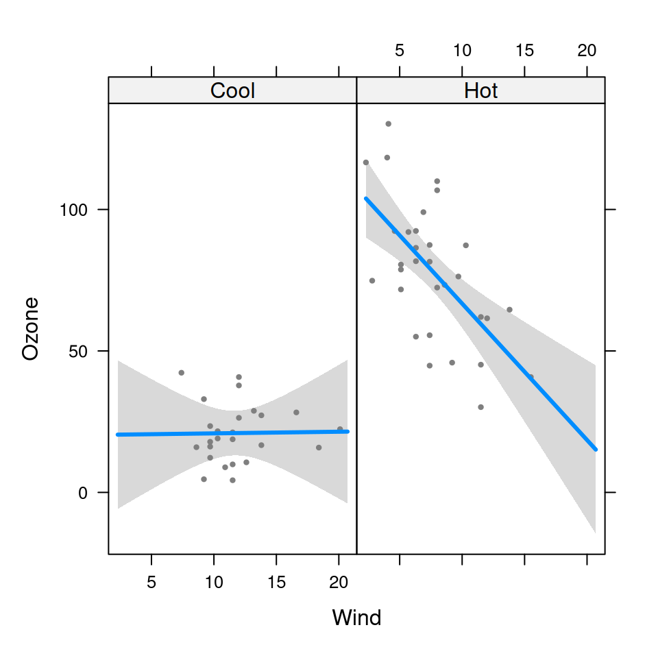
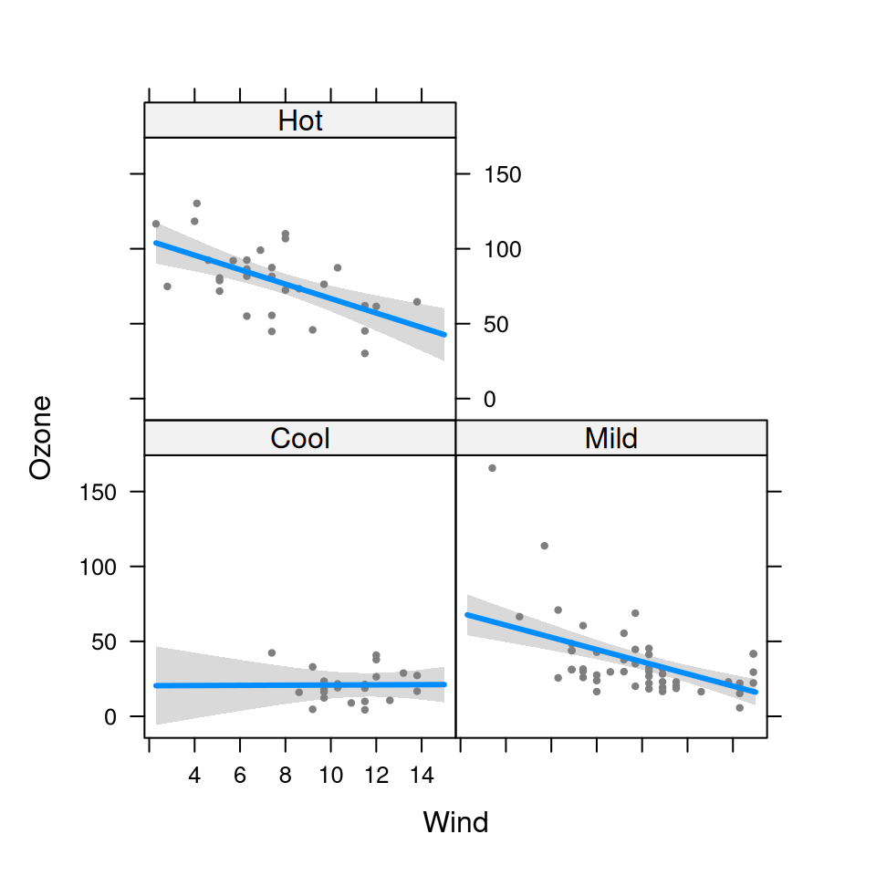

Subset a visreg object so that only a portion of the full model is plotted.
Usage
# S3 method for class 'visreg'
subset(x, sub, ...)Arguments
- x
A
visregobject.- sub
Logical expression indicating elements to keep, as in
subset()- ...
Not used.
Examples
# Fit a model and construct a visreg object
airquality$Heat <- cut(airquality$Temp,3,labels=c("Cool","Mild","Hot"))
fit <- lm(Ozone~ Solar.R + Wind*Heat,data=airquality)
v <- visreg(fit, "Wind", by="Heat", plot=FALSE)
# Plot only certain levels
vv <- subset(v, Heat %in% c("Cool", "Hot"))
plot(vv)

# Plot only up to wind 15 mph
vv <- subset(v, Wind < 15)
plot(vv)
